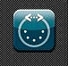
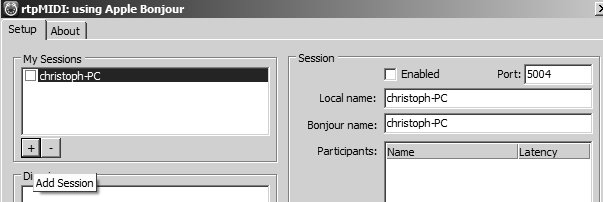
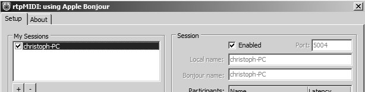
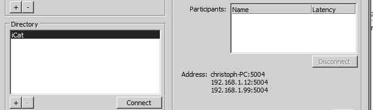
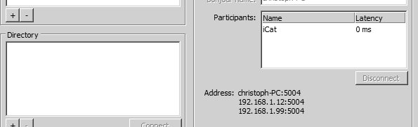
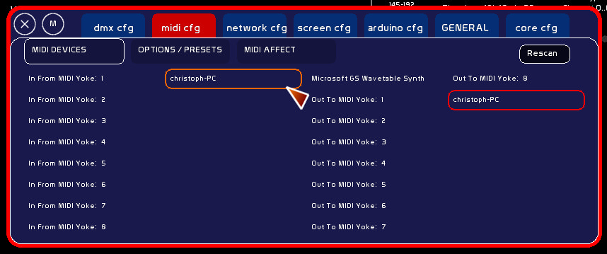

Les iPhones, iPod et iPad utilisent CORE-midi. C'est le Midi émis sur le wifi.
De nombreuses applications midi sont accessibles sur l'AppStore et permettent d'émettre du Midi, ouvrant une palette de controleurs impressionnante.
Notamment Control et TouchOSC, présents sous Android….
Pour pouvoir recevoir du Midi émis en protocole CORE-Midi, il va falloir installer Bonjour et rtpMIDI, qui sont tous les deux des logiciels libres.
Bonjour permet de mettre en réseau des machines sans passer par l'adressage IP: la machine et son petit nom s'affichent sur le réseau, vous l'acceptez et voilà.
Simple comme Bonjour…
Cependant la structure Bonjour demande un driver spécifique, et c'est là où nous allons utiliser rtpMIDI, puisqu'il va ripper le signal reçu sur un port midi qu'il va créer.
rtpMIDI se lance tout seul au démarrage de windows, une fois que vous l'avez installé.
rtpMIDI est extrêmement simple à utiliser, robuste, et fiable.

Télécharger:
Nous allons utiliser la solution la plus simple pour paramétrer une session.




